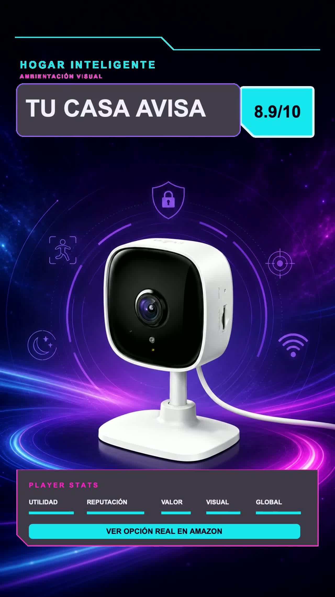

8.9/10
Hogar inteligente · Producto verificado
Tu casa puede avisarte antes de que preguntes.
Cámara compacta para interiores con video 1080p, detección de movimiento, visión nocturna y audio. Pensada para observar espacios importantes desde el celular.
1080pResolución declarada.
MovimientoDetección.
NocheVisión nocturna.
InteriorUso previsto.
Lectura PromoDetector: sobresale por utilidad cotidiana y entrada sencilla al hogar inteligente. No sustituye un sistema profesional de seguridad.
Antes de decidir: revisa privacidad, almacenamiento, Wi-Fi compatible, ubicación interior, entrega e impuestos.
ASIN B0866S3D82 · Verificado el 3 de agosto de 2026. Como Afiliado de Amazon, La Estratosférica obtiene ingresos por compras calificadas.